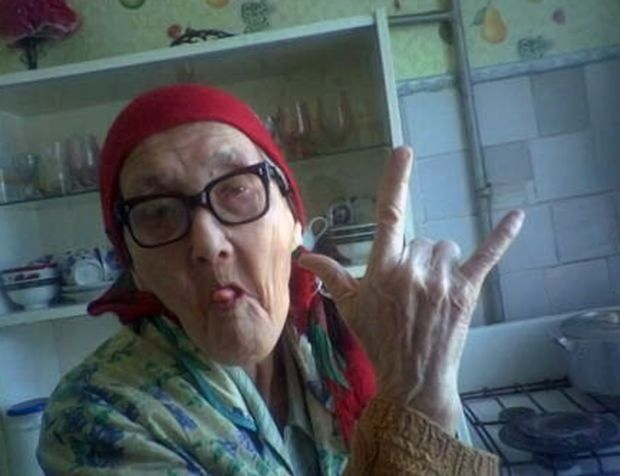

Ключ к спокойствию и адекватности, или Как перестать бояться теоремы Байеса Пособие для самоваров
ААА · А было ли наоборот? · Ааа как у других обычно? · Байесовская интуиция

1. «Зайди ко мне в кабинет, надо срочно поговорить»
Обычный вторник, необычное сообщение от начальника:
НачальникЗайди ко мне в кабинет, надо срочно поговорить
Первая мысль?
Меня уволят.
Это тревожка тревожится. Сюжет ей понятен: тебя зовут в кабинет, закрывают дверь, увольняют, отбирают одежду, ключи, бьют и выкидывают на улицу. Эмоционально ожидаешь увольнение с 95%!!! Но ты же разумный человек, поэтому начинаешь думать.
Логика-то в этом есть: увольнения зачастую начинаются с подобных сообщений. Допустим, в 8 из 10 увольнений всё начинается ровно так.
Делаем вывод: значит, 80% что уволят! 😱
Так вот этот вывод хрень полная.
Он не учитывает кое-что важное, и это кое-что успокаивает и эмоционально, и математически. Го по простым шагам посмотрим, чё не так.
Шаг 1. Если увольняют, то обычно так
Только что мы посчитали: если человека увольняют, то обычно его вот так и зовут. Пусть в 8 случаях из 10, то есть в 80%.
Но это ЕСЛИ УВОЛЬНЯЮТ, ТО ЗОВУТ ТАК. А вопрос наш обратный: если ТАК ЗОВУТ, ЗНАЧИТ увольняют. Причину и следствие нельзя переворачивать, это не жареная колбаса.
Почти каждое увольнение начинается с вызова в кабинет - да. Но отсюда ничего не следует о том, чем обычно кончаются вызовы в кабинет.
шанс увольнения = «если увольняют, то так» = 80%
Первое «=» здесь на самом деле «≠»: доля увольнений, которые начались с вызова, и доля вызовов, которые кончились увольнением, - разные числа.
Шаг 2. А бывало наоборот?
Было ли такое, что вас звали так же, а не уволили? Подписали справку, согласовали отпуск и вернулись к делам.
Допустим, вас уже раз двадцать звали в кабинет. Примерно половина вызовов звучала так же тревожно: «зайди, надо срочно поговорить». Ни разу не уволили.
А как учесть «ни разу»? Не будет деления на ноль?
Не будет. Отсюда мы считаем другую долю: сколько безобидных вызовов звучали тревожно. Это 10 из 20, делим на 20 безобидных вызовов, а не на увольнения.
Ноль в знаменателе получился бы, если по этой работе считать «если увольняют, то как зовут»: увольнений тут не было, вышло бы 0 / 0. Поэтому эту долю, 80% из шага 1, мы берём из прошлого опыта и того, как увольняют вообще.
Значит, если не увольняют, точно так же зовут в 50% случаев. Учтём этот факт: какая доля от всех «тревожных» вызовов всё-таки про увольнение?
шанс увольнения = 80 / (80 + 50) = 61,5%уже лучше, но ещё не всё
Тревога уже немного спала, и посчитала это ваша же интуиция: такой вызов почти так же часто бывает и без увольнения. Чем больше звали без последствий, тем меньше вызов связан с увольнением.
Если бы так (с тревожным сообщением) звали одинаково часто и с увольнением, и без, вызов не значил бы ничего: 80 / (80 + 80) = 50 на 50.
Но что-то тут не так, не может же каждый заход в кабинет быть монеткой орёл-решка на увольнение? Что мы ещё не учли?
Шаг 3. Как часто увольняют вообще?
Прошлая формула считает, будто половина вызовов в кабинет кончается увольнением: как её подлатать?
Каждый день в этот кабинет заходят десятки людей, и почти все возвращаются за свой стол. Допустим, увольнением кончается 1 вызов из 100 (в реальности намнооого реже).
Теперь каждое наблюдение взвешиваем тем, как часто оно бывает. Представим 100 вызовов в кабинет:
- 1 вызов кончается увольнением. С вероятностью 80% он начался с тревожного «надо срочно поговорить»: 80% × 1 = 0,8 тревожного вызова.
- 99 вызовов кончаются ничем. Но и из них так же тревожно звучит половина: 50% × 99 = 49,5 вызова.
- Всего тревожных вызовов 0,8 + 49,5 = 50,3. Вас позвали именно так, значит, вы один из этих 50,3. И только 0,8 из них - про увольнение.
Это и есть вся формула: тревожные вызовы с увольнением делим на все тревожные вызовы.
шанс увольнения = 80% × 1 / (80% × 1 + 50% × 99)
= 0,8 / (0,8 + 49,5) = 1,6%
Было 99% эмоционально и 80% «рационально». Стало меньше двух процентов. Это те же ваши ощущения и наблюдения, просто сложенные честно. Легче?
Точные числа знать не обязательно. Суть в поправке ожиданий: каждый из трёх вопросов сдвигает оценку, и третий обычно сдвигает сильнее всех.
2. Калькулятор спокойствия
Посчитай свои ощущения
Аааа! Увольняют всегда так!
«Так оно обычно и происходит»
Меня % уволят!!!
А было ли наоборот?
«А я возвращался из кабинета целым-невредимым»
Меня звали раз и не уволили,
при этом я тревожился раз
* Тревожка молча считает: уволят или нет - 50 на 50.
Если зовут в первый раз
Короче, даже если всё в первый раз, можно считать неизвестность 50 на 50, как выйдет. Даже это снижает градус напряжения: .
Подсказка тревожным
Вы тревожились чаще, чем через раз, и всё равно возвращались за стол. Это не повод тревожиться сильнее: наоборот, это уменьшает шанс увольнения. Чем чаще тревога бывает зря, тем меньше она говорит о беде.
Токсичное «ой, да ты вечно переживаешь» в переводе на рациональный язык значит: в прошлом с той же тревогой вы приходили к другим результатам. Поэтому объективно стоит снизить градус напряжения.
А у других и вообще обычно как?
«Другие норм заходят»
Из 100 зашедших в кабинет нормально выходят
Визуализация вычислений
Квадрат - 100 вызовов в кабинет. Слева уволенные, справа все остальные. Ярко - кого звали тревожно
Вас позвали тревожно, значит, вы в одной из ярких частей. Склеим их:
3. Это и есть теорема Байеса
Три шага выше - это три числа, из которых она собирается:
- «Если увольняют, то так» - P(позвали | уволят). Шаг 1, по-научному правдоподобие (likelihood).
- «А бывало наоборот?» - P(позвали | не уволят). Шаг 2: как часто то же самое бывает без беды, правдоподобие альтернативы (likelihood under the alternative; в медицинских тестах - false positive rate).
- «Как часто вообще?» - P(уволят). Шаг 3, априорная вероятность (prior): что вы знали до сообщения.
А апостериорная вероятность (posterior) - это ответ: P(уволят | позвали), оценка после сообщения. Её и показывает большое число в калькуляторе.
Шанс увольнения - это доля «увольнительных» вызовов среди всех, которые звучат так же:
P(уволят | позвали) =
P(позвали | уволят) · P(уволят)
/ ( P(позвали | уволят) · P(уволят)
+ P(позвали | не уволят) · P(не уволят) )
Знаменатель - все способы, которыми вас могли так позвать (evidence). Обычно его коротко пишут как P(позвали), и получается каноничная запись:
P(A | B) = P(B | A) · P(A) / P(B)
Выводы
Когда что-то пугает, задайте три вопроса:
- Не перевернул ли я фразу? «Если увольняют, то зовут» не значит «если зовут, то увольняют».
- А бывает так же без беды? Если да и почти так же часто, сам знак почти ничего не значит.
- Как часто беда случается вообще? Редкое событие остаётся редким даже после тревожного знака. Именно этот вопрос тревожка забывает чаще всего.
Работает не только с начальником: страшный анализ, шорох ночью в палатке, «нам надо поговорить» от близкого человека.
Доп. материалы
- Покер: сколько можно ставить? · ещё один интерактивный разбор
- Bayes theorem, the geometry of changing beliefs · 3Blue1Brown
Спасибо, что прочли!
Если нашли ошибку или хотите оставить комментарий, пишите мне в телеграм: t.me/art_oshk.